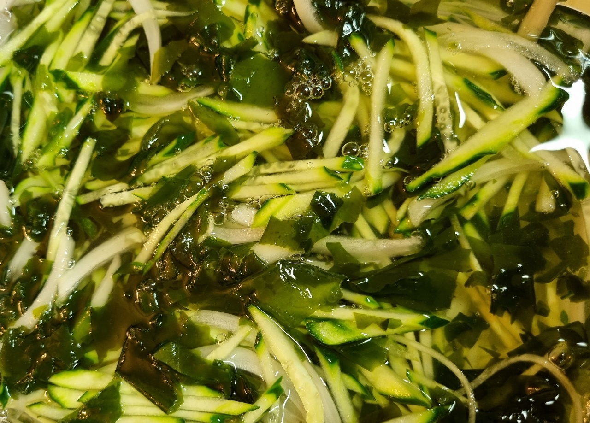

오이냉국

- 재료
오이 1개, 마른미역 2T, 양파 1/4개, 물 600ml, 소금 1T, 설탕 4T, 식초 6T, 참깨
- 조리순서
- 마른미역 2T를 찬물에 5분 정도 불린 후 잘 씻어서 잘게 잘라놓습니다.
오이는 겉만 살짝 깎고 길게 채썰어서 준비합니다.
양파는 얇게 채썰고 매운 맛이 빠지도록 찬물에 담궈놓습니다.
- 물 600ml에 소금 1T, 설탕 4T, 식초 6T를 넣고 잘 저어서 녹입니다.
채 썰어둔 오이와 양파를 넣습니다.
- 미역과 얼음을 넣고 드시면 됩니다. 참깨를 뿌려도 좋습니다.